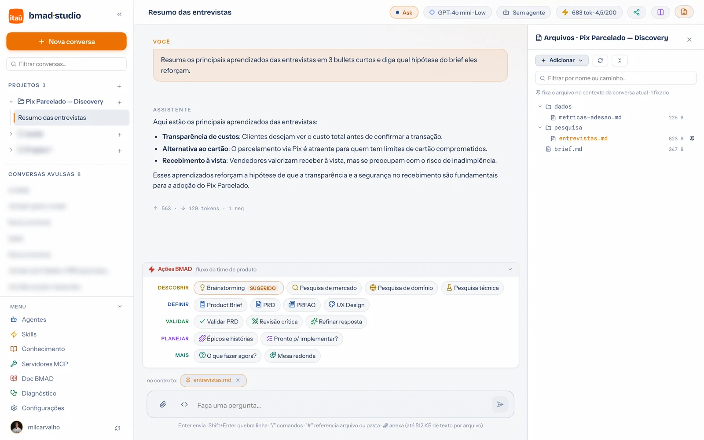
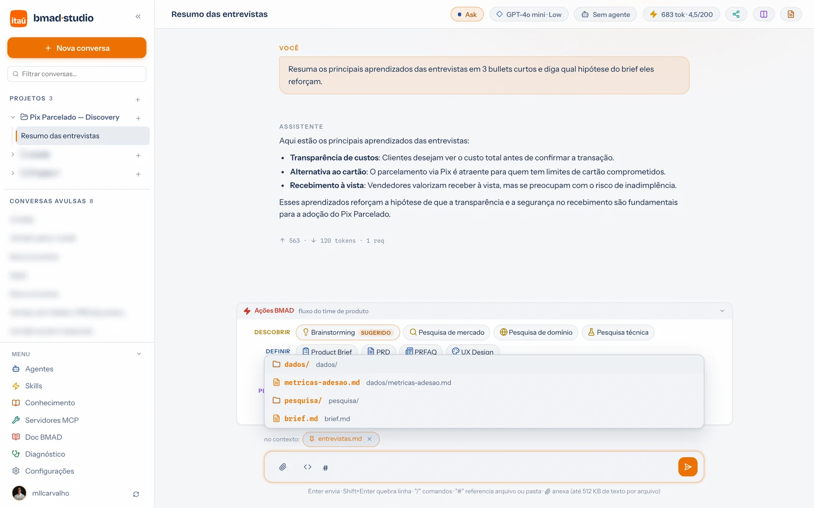
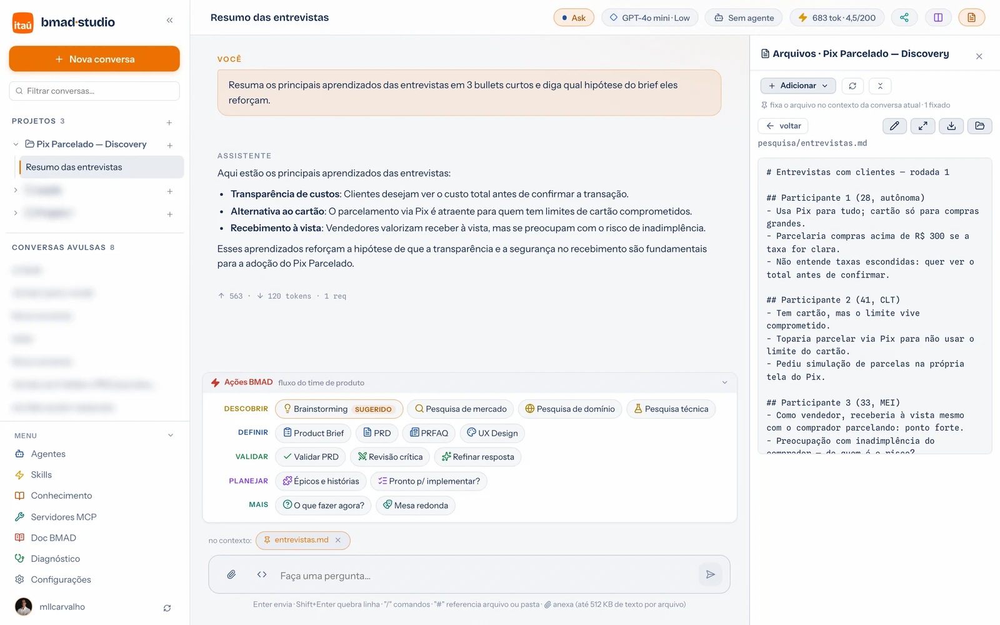

Guia de uso · 04
Arquivos do projeto
O botão Arquivos (canto superior direito da conversa) abre o painel lateral com a pasta de trabalho — a do projeto, ou o workspace da conversa avulsa. É a mesma pasta que o assistente usa no modo Agent: o que ele gerar aparece aqui na hora.

Adicionar arquivos
O botão Adicionar tem quatro opções (ou simplesmente arraste arquivos/pastas para o painel):
- Arquivos… — envia arquivos avulsos (até 15 MB cada).
- Pasta (copiar para cá)… — envia uma pasta inteira do computador, copiando o conteúdo para a pasta do projeto.
node_modules,.gite afins são pulados. - Referenciar pasta do computador… — aponta uma pasta de qualquer lugar da máquina sem copiar nada (abaixo).
- Nova pasta vazia… — cria uma pasta para organizar.
.md irmão com o
texto extraído — é esse que o assistente lê e que você fixa no contexto. O original fica
guardado do lado, intacto.
Referenciar uma pasta (sem copiar)
Tem uma pasta que já vive em outro lugar — um repositório, uma pasta de área de trabalho? Referencie em vez de copiar: ela aparece na árvore com um ícone próprio, e toda leitura e escrita acontece nos arquivos originais, no lugar onde estão.
- Ao escolher a opção, o seletor de pastas abre na janela do VS Code — escolha lá e volte ao portal.
- Tudo funciona igual: fixar no contexto,
#, edição, o agente lê e escreve. - Remover referência (botão direito na pasta) desfaz o vínculo — os arquivos originais continuam intactos, sempre.
- A referência não pode ser renomeada nem arrastada; de resto, é uma pasta como qualquer outra.
Fixar no contexto (o alfinete)
O alfinete ao lado de cada item fixa o arquivo — ou a pasta inteira — no contexto da conversa atual. Fixado = entra em toda mensagem, sem precisar mencionar. Os chips em "no contexto:" (acima do campo de mensagem) mostram o que está valendo; o × remove.
E no próprio campo de mensagem, digite #:

Ler e editar sem sair da conversa

- Editar (lápis) abre o conteúdo para alteração direta; Salvar grava no disco.
- Ampliar abre em modal largo — markdown renderizado, ótimo para ler documentos longos.
- Modo preview (ícone de colunas na barra superior): os arquivos abrem em abas ao lado do chat — acompanhe o documento enquanto o assistente o escreve.
- Botão direito em qualquer item: renomear, baixar, mostrar na pasta local, excluir, nova pasta dentro.
- Arrastar um item sobre uma pasta move; soltar no fundo da árvore leva para a raiz.